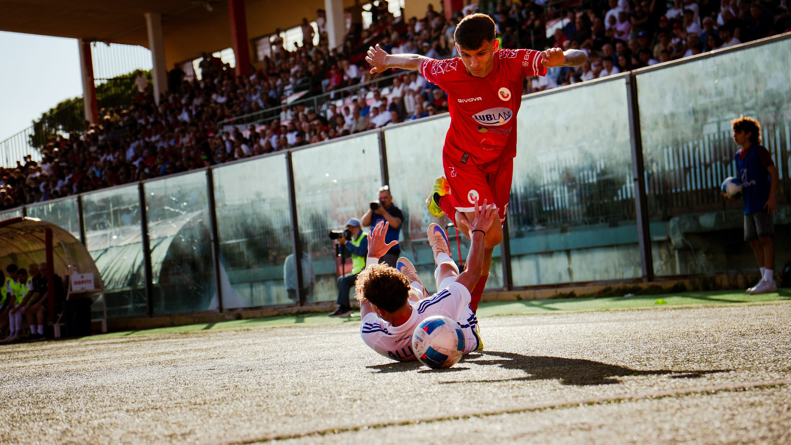
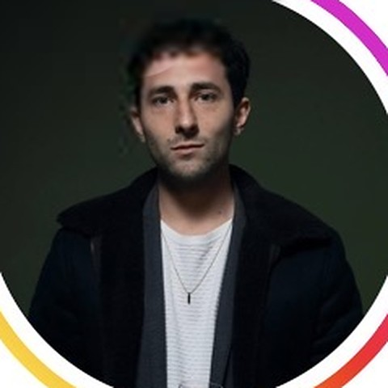
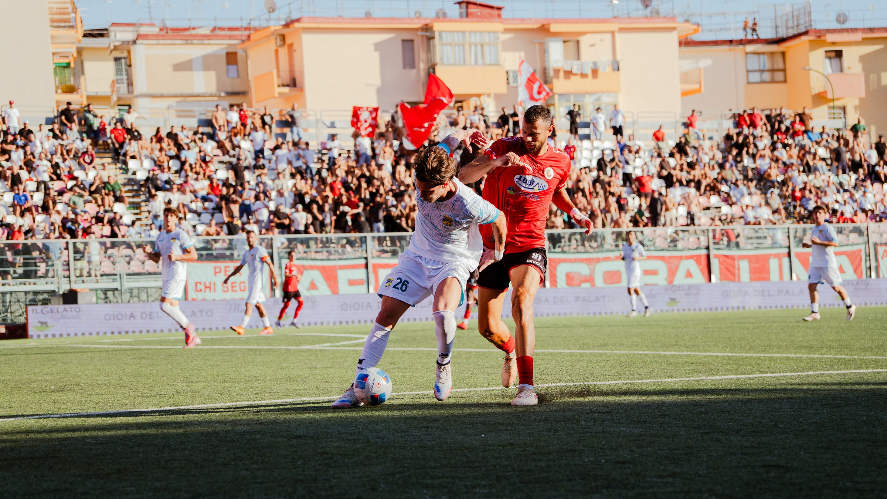
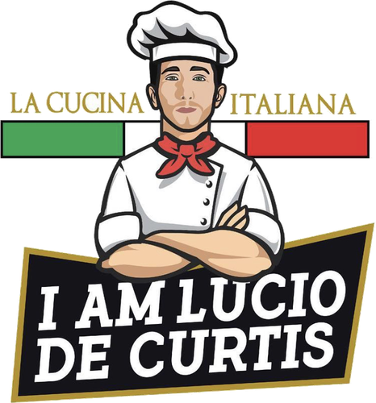
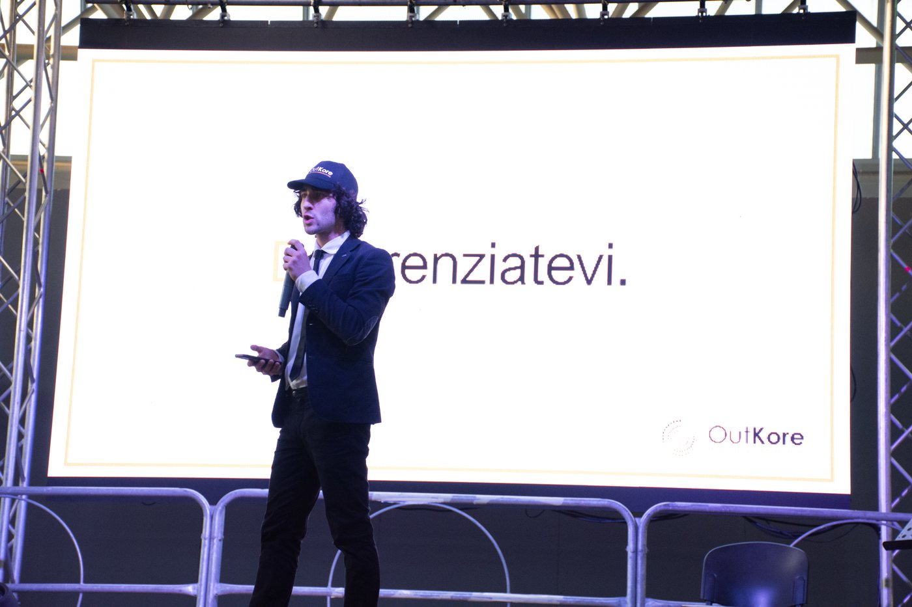

Sports Photographer& Full Stack
Marketer


Ciao, sono
Lucio De Curtis.
Sports Photographer e Full Stack Marketer. Da 9 anni supporto aziende e professionisti nei processi digital e di comunicazione.
Ho iniziato nel 2017 quasi per gioco, raccontando locali e ristoranti sui social. Da lì è nata la voglia di fare comunicazione sul serio: prima con una piccola agenzia, poi da freelance, sempre al fianco di aziende e professionisti che avevano bisogno di farsi capire online.
Lo sport è arrivato con Napoli Running e la Napoli City Half Marathon, dove ho imparato a raccontare un evento mentre succede. Oggi provo a unire le due cose: scatto per club, atleti e tornei, cercando prima di capire cosa serve davvero a chi deve comunicare. E a ogni partita imparo qualcosa di nuovo.
 CapCut
CapCutNon consegno solo foto. Consegno materiale pronto per comunicare.
Anni di social media strategy e gestione clienti mi hanno insegnato cosa serve a un club, a un torneo o a uno sponsor prima, durante e dopo un match. Mi organizzo per una delivery dei file anche istantanea, così i contenuti sono pronti quando servono.



